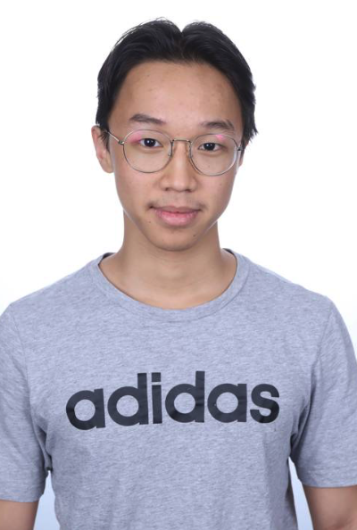
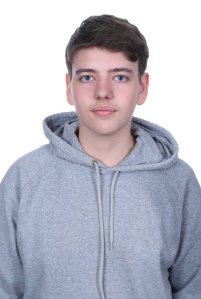

Benjamin Raccah
Responsable traitement audio
Travaille sur les effets audio, tels que le chargement d'un son Il participe à la conception de l'intégration dans le moteur audio.
Projets réalisés
- Projet OCR
GitHub : benji000
Notre équipe est composée de quatre étudiants passionnés par le développement et le traitement audio. Nous collaborons sur le projet MixRust afin de concevoir une application performante de lecture et de modification audio en Rust. Chaque membre apporte ses compétences pour créer une solution complète et optimisée.
Responsable traitement audio
Travaille sur les effets audio, tels que le chargement d'un son Il participe à la conception de l'intégration dans le moteur audio.
Projets réalisés
GitHub : benji000

Responsable mixage & performance
Implémente le pipeline audio et optimise le traitement en temps réel. Il travaille sur la fluidité et les performances du moteur sonore.
Projets réalisés
GitHub : KevToToFr

Responsable interface & UX
Conçoit l'interface graphique avec GTK et veille à une expérience utilisateur claire et intuitive. Il s'assure que les fonctionnalités soient accessibles et ergonomiques.
Projets réalisés
GitHub : Guilhem-petit

Chef de projet
Coordonne le projet, organise les tâches et s'assure du bon avancement. Il participe également aux tests et à la validation des fonctionnalités.
Projets réalisés
GitHub : Georges-Savini